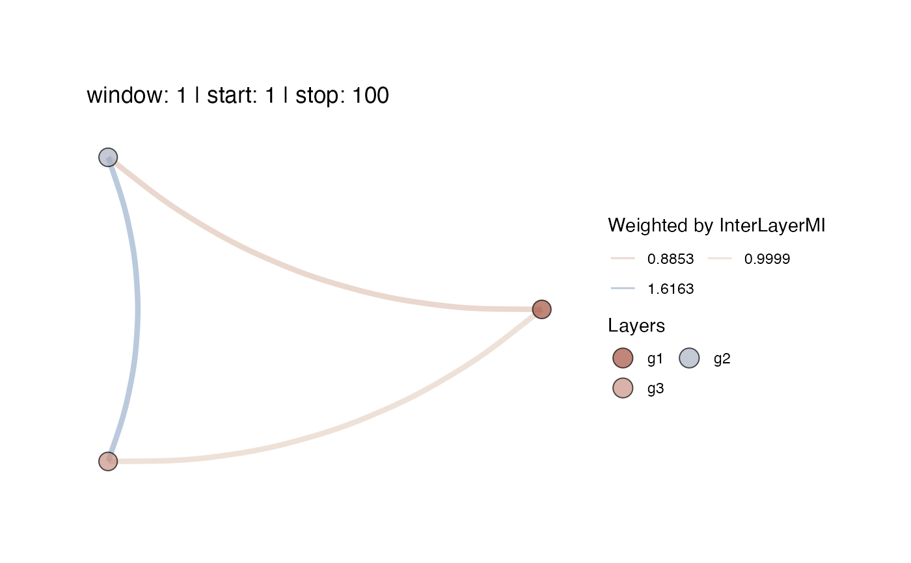

This function will plot a Multiplex Recurrence Network from a list of igraph objects that can be considered the layers of a network. or based on the output of function mrn(). The layers must have the same number of nodes.
mrn_plot( layers = NA, MRN = NA, MRNweightedBy = c("InterLayerMI", "EdgeOverlap")[1], win = NA, step = NA, overlap = NA, alignment = "r", cumulative = FALSE, doPlot = TRUE, doSave = FALSE, coords = NA, RNnodes = FALSE, vertexSizeBy = "degree", scaleVertexSize = c(0.01, 5), vertexColour = NA, vertexBorderColour = "black", showVertexLegend = TRUE, showSizeLegend = FALSE, alphaV = 0.7, scaleEdgeSize = 1/5, alphaE = 0.5, showEdgeColourLegend = FALSE, curvature = -0.2, createAnimation = FALSE, useImageMagick = FALSE, loopAnimation = TRUE, transitionLength = 3, stateLength = 1, gifWidth = 600, gifRes = 150, noParts = TRUE, imageDir = NA, silent = TRUE )
| layers | A list of igraph objects representing the layers of the multiplex network. The layer networks must all have the same number of vertices. |
|---|---|
| MRN | The output from function |
| MRNweightedBy | The measure to be used to evaluate the average structural similarities between the layers of the network. Valid options are: |
| win | The window size passed to |
| step | The stepsize for the sliding window (default = |
| overlap | The window overlap passed to |
| alignment | Whether to right ( |
| cumulative | To make the network represent cumulative time, set |
| doPlot | Plot the multiplex recurrence network (default = |
| doSave | Save the plots. |
| coords | A data frame with layout coordinastes generated by calling any of the igraph layout functions. If |
| RNnodes | Should the vertices of the MRN represent a plot of the RN of the layers? This is recommended only for a small numbers of vertices. (default = `FALSE``) |
| vertexSizeBy | A valid igraph function that calculates node based measures, or a numeric constant. (default = |
| scaleVertexSize | Scale the size of the vertices by setting a range for |
| vertexColour | A vector of colours for the vertices. If this is a named list, names will be displayed in the legend. |
| vertexBorderColour | Draw a border around the vertices. Pass |
| showVertexLegend | Show the vertex colour legend? |
| showSizeLegend | Should a legend be shown for the size of the nodes? (default = |
| alphaV | Set transparency for Vertices (default = |
| scaleEdgeSize | Scale the size of the edges by a constant: |
| alphaE | Set transparency for Edges. A single numeric, or a vector of length |
| showEdgeColourLegend | Should a legend be shown for the colour of the edges? (default = |
| curvature | The |
| createAnimation | If |
| useImageMagick | Should ImageMagick be used to create the animation. NOTE: ImageMagick has to be installed on your system, see |
| loopAnimation | Should the animation loop? (default = |
| transitionLength | Length of each transition in the animation, ignored if |
| stateLength | Value of |
| gifWidth | Width of the animated |
| gifRes | Resolution of the animated |
| noParts | Do not plot the individual graphs that make up the animation to the current |
| imageDir | Directory to save the layer images and windowed MRN plots. If |
| silent | Silent-ish mode |
A matrix with edge weights between layers that represent the measure MRNweightedBy.
#' # Create some layers library(igraph) layers <- list(g1 = igraph::sample_smallworld(1, 100, 5, 0.05), g2 = igraph::sample_smallworld(1, 100, 5, 0.5), g3 = igraph::sample_smallworld(1, 100, 5, 1)) mrn_plot(layers = layers,showEdgeColourLegend=TRUE)#> #> ~~~o~~o~~casnet~~o~~o~~~ #> #> Welcome to the multiplex... in layer similarity mode! #> #> #> ~~~o~~o~~casnet~~o~~o~~~#> $MRN #> $MRN$`window: 1 | start: 1 | stop: 100`#> #> #> $interlayerMI #> $interlayerMI$`window: 1 | start: 1 | stop: 100` #> g1 g2 g3 #> g1 NA 0.9507489 0.9998704 #> g2 NA NA 1.6162824 #> g3 NA NA NA #> #> #> $edgeOverlap #> $edgeOverlap$`window: 1 | start: 1 | stop: 100` #> g1 g2 g3 #> g1 NA 0.126 0.046 #> g2 NA NA 0.045 #> g3 NA NA NA #> #> #> $meanValues #> NULL #>